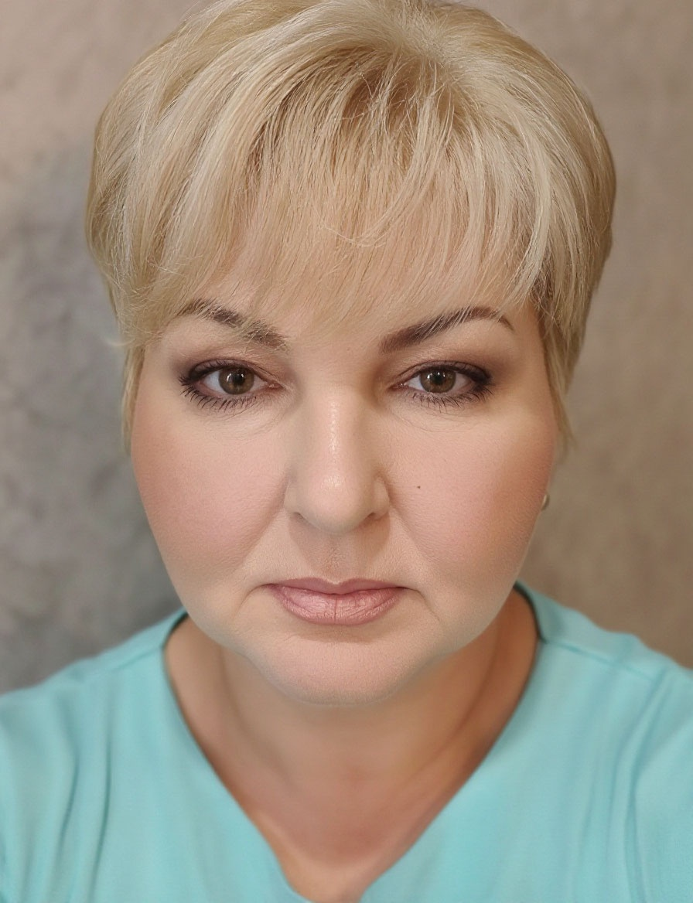

Ольга Зотова
QA Engineer (Manual / Junior Automation) · ищу удалённую работу
Обо мне
QA-инженер: ручное тестирование и базовая автоматизация на Java и JavaScript.
В IT пришла осознанно — 20 лет в управлении операционными процессами,
поэтому хорошо понимаю бизнес-процессы и умею находить логические ошибки в продукте.
Навыки
- Тестирование: функциональное, регрессионное, E2E, UI и API
- Языки: Java, JavaScript, Python (базовый уровень), SQL
- Автотесты: JUnit 5, RestAssured, Selenide, Espresso, Cypress
- Инструменты: Postman, Git, Docker, GitHub Actions, Jira
Проекты
Образование и сертификаты
- Инженер по тестированию ПО, Нетология, 2026 — диплом
Контакты